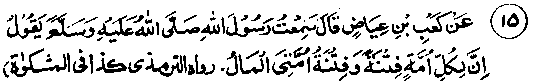
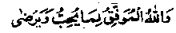

Chapter Two · Section (b): Ahadith regarding the evils of miserliness
6. Wealth is a temptation for my Ummah; Wealth, its advantages and disadvantages

Hadith 15
Ka’b Radhiallaho anho says that he heard Rasulullah Sallallaho alaihe wasallam saying, "There is a trial and a temptation for every Ummah. The trial and temptation of my Ummah consists in wealth."
Note: The sacred words of Rasulullah Sallallaho alaihe wasallam are not only a matter of faith but an absolute truth. It is a fact of daily observation that excessive wealth often becomes the cause of vagrancy, sensuality, usury, adultery, cinema-going, gambling, rialtreatment and leads to looking down upon people, apathy towards the ‘Deen’ of Allah and obligatory Salaat, and finding no time for other religious observances, etc. Poverty, on the other hand, does not bring about one-third or one-fourth or even one-tenth of these evils. (There is a saying in Persion, meaning, love-making without money is empty words). Even if these vices do not occur, wealth creates lust for further increase. For example, if one gets three thousand rupees, his constant efforts will be how to increase it and this keeps him so busy that he will hardly care for any rest, for Salaat, Fasting in Ramadan and even Hajj and Zakaat His ceaseless efforts will be aimed at increasing his business. His efforts in that line will ignore any other thought regarding participation in religious activities or going out to work for Deen, because of the fear of harming his business. In this connection, Rasulullah Sallallaho alaihe wasallam has said repeatedly that, when a person acquires two valleys full of gold, he will begin to look for a third one and that, man’s appetite cannot be satisfied by anything but the earth of the grave.
One Hadith says that, after possessing one valley full of wealth, the man begins a search for the second and, when he has two, he will look for a third one; nothing can end his appetite except the earth of the grave. Another Hadith says that a man may have a whole forest of date-palms, but he will wish to have one more and, when he has that, he will desire to have a third one. Thus he will never be content till his death, when his stomach will be filled with the earth of the grave. Another Hadith says, "If a man is given a valley full of gold, he will seek another; if he gets two, he will crave for a third; nothing can satisfy a man’s appetite but the earth of the grave. (Bukhari). It shows that man’s greed for having more and more has no end, as long as he lives in this world. He goes on entangling himself in one thing and another for increasing his income, having no rest even to remember Allah Ta'ala. That is why Rasulullah Sallallaho alaihe wasallam made the Du‘aa:
"O Allah! Let the provisions of my family members be a bare sufficiency (i.e. just as much as should suffice them for their bare needs, and nothing more, lest they should be entangled in the vicious circle of getting more and more)"
Another Hadith says: "Good and merited is the life of a person who has been granted Islam and an adequate livelihood, with which he is contented". Still another Hadith says that every rich and poor person, on the Day of Judgement, will wish that his provisions in this life were limited to bare sufficiency. A Hadith in Bukhari says that Rasulullah Sallallaho alaihe wasallam told his companions that he was not afraid of poverty and hunger for them, but was afraid of their being given plenty, like the previous Ummahs. ' Then, your hearts may fall a prey to greed for more and more money, as was the case with the earlier Ummahs, and consequently you may become the victims of that which brought disaster to them . Similarly, warnings have been given in many other Ahadith about the dangers of excessive wealth and its ultimate fate. Wealth by itself is not an unclean or undesirable thing; it is the perversity in our hearts which, when wealth comes, turns the heart to corruption and creates diseases in it. If someone steers clear of that harmful element, abstains from hoarding and uses wealth according to laid-down laws and procedures, it will do him no harm but will prove to be beneficial. Generally, however, care is not taken of the methods and guidelines for its use, nor are the known mistakes rectified. So wealth begins to spread its poisonous effects rapidly.
It is like eating guavas when suffering from cholera, which inherently have no defect but with the presence of the disease in the body these prove very harmful, and may even lead to death. That is why doctors strictly prohibit the eating of guavas when cholera is prevalent, and huge quantities of that fruit are destroyed under their orders. It is surprising that we are afraid of touching a thing when an ordinary doctor tells us that it is harmful for us, while no heed is paid to the authority whose wisdom and understanding, enlightened by the Divine light of Nabuwwat, are unsurpassed by any of the doctors and physicians of the world. Since Rasulullah Sallallaho alaihe wasallam has repeatedly warned us about the harm and troubles caused by wealth, every one of us aught to be apprehensive of the afflictions that wealth may cause and should use it most carefully, in accordance with the rules of Shariah. For this, it is most important to fulfil the obligations we owe to Allah Ta'ala. It has also been said by Rasulullah Sallallaho alaihe wasallam that a wealthy person who has fear of Allah Ta'ala has nothing to fear from the (evils of) riches. Abdul Aziz Deblavi Rahmatullah alaihe is quoted to have said that riches can be the best aid to fulfil the commandments of Allah Ta'ala and to win His favours. Rasulullah Sallallaho alaihe wasallam when calling people to Allah Ta'ala never told them to give up all worldly things; rather heencouraged them to live with their families using the good things of this life. Abdul Aziz Rahmatullah alaihe further said, "When Uthman Radhiallaho anho died, his treasurer produced one hundred and fifty thousand gold-coins (Dinaars) and a million silver pieces (Dirhams); in addition, there was landed property worth two hundred thousand Dinaars in the Khaiber area. Abdullah Ibne Zubair Radhiallaho anho left behind property worth fifty thousand Dinaars, one thousand horses and one thousand slaves. Amr Ibne Aas Radhiallaho anho left three hundred thousand Dinaars, while the wealth left behind by Abdur Rahman bin Auf Radhiallaho anho was countless. Yet, Allah Ta'ala has praised all of them in the Holy Qur’an,
"They supplicate and pray to Allah morning and evening only for His pleasure". (Surah Kahf: 28)
"They are the people whom their business dealings do not prevent from remembering Allah". (an-Noor: 37).
It is true that, in those days, frequent conquests brought the Sahabah large amounts of abundant wealth, which remained with them, despite their generous spending, (their attachment with their property was negligible compared with their love and devotion to Allah Ta'ala. Some instances have been quoted in the books, ‘Fazaile Namaz’ (Virtues of Salaat) and The Stories of Sahabah,’ which ought to be read carefully for the sake of self-admonition. For example, Abdullah Ibne Zubair Radhiallaho anho, who has been mentioned above, used to stand up-right in his Salaat like a peg driven in the ground and his ‘Sajdah’ used to be so lengthy that sparrows would perch on his back, and yet he possessed much wealth. Once,when the enemy forces attacked his position, he was praying in the Masjid and a shell hit the wall of the Masjid; the debris fell very close to him but he did not take notice of it and continued to pray. Again, in the case of another Sahabi Radhiallaho anho it is related that, when his thoughts wandered to his fully ripe date-palms garden while praying in it, he felt so grieved that after finishing his prayers he went at once to Uthman Radhiallaho anho, who was then the Khalifah, and presented the garden to him, which the latter sold for fifty thousand and spent the money for religious purposes.
Similarly, two bags full of Dirhams amounting to more than one hundred thousand pieces were presented to Aishah Radhiallaho anha , which she distributed to the needy. She herself was fasting, but did not think of telling her slave-girl to keep something or to purchase some food, out of that, for breaking the fast At the time of Iftar, when the maid sorrowfully remarked that if she had kept a Dirham, some meat could have been purchased and they could, have eaten it with their meals, Aishah Radhiallaho anha said that this could have been done,had the maid reminded her at that time; it was no use being sorry later. These and several other similar instances have been mentioned in the "Stories of Sahabah", while thousands of such instances have been mentioned in books of history. The Sahabah were the people who considered wealth as trivial as the household rubbish; then how could it cause them any type of harm?
Here, it can be argued thatito have wealth in abundance is not forbidden, as the Sahabah Radhiallaho anhum possessed it in plenty during the days of Khulfa-e-Rashideen and the glorious early period of Islam. But, to take their case as a precedent for our times would be like a feeble and diseased person endangering his life by trying to do things that a young and strong person does. The story at No. 54 in the series of stories at the end of this book should be read carefully in this context Imaam Ghazali Rahmatullah alaihe has said that wealth has an antidote as weU as the poison of a snake. Its benefits are the antidotes, while its damages are like a poison. Only he who has knowledge of its benefits ard harmful effects has the power to draw upon its benefits and save himself from harm. Wealth has two types of benefits, worldly and religious. The worldly benefits are well known to all: that is why every one does his utmost to earn it The religious benifits are three:
1. It helps.directly or indirectly in the performance of worship. The direct benefit is in respect of Hajj and Jehaad, which cannot be accomplished without money. Indirectly, money is needed for purchasing food, etc., which if not available will keep a person away from religious activities. When money helps in performing worship, in that capacity, earning money itself becomes worship but only to the extent which is needed for worship; the excess over it will not be in that category.
2? The other benefit of wealth is in spending on other people, which is of four categories:
(a) To give Sadaqah to the poor and needy people. This has innumerable benefits, which have already been described.
(b) To spend on well-to-do persons, through gifts or invitation to meals, for creating good relations and friendship and to encourage others to be generous; many Ahadith mention benefits pf inviting people to meals or giving them presents.
(c) To spend for the sake of preserving one’s prestige and honour when there is danger from undesirable people. This also counts as Sadaqah. According to the author, a bribe given to escape
. harm,comes under the same category. Bribery for some material gain is Haraam (forbidden): both the giver and the receiver commit a grievous sin.
(d) To pay wages to the labourers employed for some work, which often one cannot do oneself. Sometimes, even if the work could be done by oneself the employment of a labourer, to save precious time, for doing more useful things like studies or worship, etc.,is perfectly alright
3. The third Religious benefit concerns spending on general welfare activities. In this category would come the building of a Masjid, travellers inns, bridges, religious schools, and hospitals, etc. These will remain a source of recurring benefit, even after death.
The above is a summary of benefits obtainable from wealth from the religious standpoint. Shah Abdul Aziz Rahmatullah alaihe lists seven activities that count as worship when money is spent on them namely: (i) Zakaat and Usher, (ii) Sadaqah-e-Fitr (Fitr Alms,) (iii) Voluntary Sadaqah, which includes hospitality and giving loans to needy persons,(iv) Building of Masjid, Inns and bridges, etc., as charitable endowments (v) To perform Hajj or to help a Haji by providing food or conveyance (vi) To spend in Jehaad, when one Dirham will count as seven hundred (vii) To spend on members of onefe family (wife and young children) and, if the means permit after that, to help the needy relatives.
Imaam Ghazali Rahmatullah alaihe has also noted that the harmful aspects of wealth are two, the religious and the worldly. The Religious harms are of three types:
(a) Wealth leads towards sins excessively. Often one gets involved in lustful activites, ignoring the risk of becoming a pauper. If a person finds a particular sin beyond his reach, then he loses his inclination towards it.while for anything which is within one’s ' reach his anxiety to get it becomes more intense. Wealth is a great source of power. That is why, the temptations from wealth are far stronger than otherwise.
(b) Wealth tends to increase the desire for more enjoyable things of life in legitimate directions, such as having better and better . food and clothing, etc. The rich would never take simple barley bread or wear coarse clothes; luxurious living leads to increased demand for more things, which leads to increasingly heavy expenses, often beyond the income, which in turn leads to making money by illegitimate means,. Thus, a foundation is laid for fraud and hypocrisy. Too much wealth usually attracts a great many visitors and associates, and maintaining connections with them is bound to lead to vices like malice, envy and hostility. All these will create numerous conflicts, which even wealth will not be able to resolve. Deeper reflection on such matters will indicate countless damages of which wealth is the root-cause.
(c) No rich person can escape being obsessed with the desire of multiplying his wealth and property, so he remains neglectful of ‘Zikr and Fikr’ of Allah Ta'ala. And whatever makes one unmindful of Allah Ta'a/a.will bring him nothing but a perpetual loss. That is why the Nabi Isaa Alaihissalaam has said that three evils are connected with wealth. First, it is earned by improper means. Someone said, "If the means are lawful? "The reply was that the spending will be in wrong directions. Someone then asked, "If the spending is right?" The reply was that the anxiety to increase wealth and to take care of it is bound to keep the possessor from the remembrance of Allah Ta'ala, which is an incurable disease.
The remembrance of Allah Ta'ala is the essence of all prayers and worship, for which a free mind is a must, whereas a rich person, with plenty of property of varied types, remains occupied day and night with the troubles with tenants and peasants about recoveries and dues from them, about water distribution, etc. Then there are the problems of partnership about shared land or business; there are the state officials and their agents to be looked after. The servants and the labouring class pose, their own problems. The same is the fate of the business class who have plenty of worries about their partners, if the business is a joint one. And, the sole trader is beset with worries to increase his income. There are few engagements requiring attentioh when wealth is in the form of cash with the owner but, even then, the thought of its safety, the fear of theft and worry about the ways of spending it and the people who are jealous of him, are some of the worries that keep the owner’s mind occupied with anxieties. All these are some of the harmful effects of wealth and property.
On the other hand, the person who just has enough to meet his essential needs is free from such anxieties. Therefore the antidote for the poison of wealth is to give away, for good purposes, whatever is in excess of one’s legitimate personal use. If the excess is kept back, it becomes a poison and leads to vices. May Allah Ta'ala save us all from this poison and enable us to spend our wealth on worthy causes. The apt example of wealth is that of a snake. To him,who is an expert in catching a snake and knows its ways, no harm can come from it; on the contrary, he can make an antidote from it, or get some other advantages from it. But, if an ignorant person handles a snake he will he inviting his own death. As such, if we try to copy the example of the well-to-do Sahabah Radhiallaho anhum and try to be rich like them, we shall only be asking for our ruin. For them, it was a different matter, because they treated wealth like ordinary fire-wood.as is clear from numerous examples set by them: wealth did not divert their attention from Allah Ta'dla for even a moment. In spite of this, they were always afraid of its ill effects; their histories give ample evidence.

And truly Allah Alone aids a person to do what is pleasing to Him.